A cat. Nine lives. One cheese crisis.
Claws of Marmalade
A blocky, ray-traced first-person maze shooter. You are Major Marmalade, a big orange tabby. Fight through six levels of Das Rattenreich.
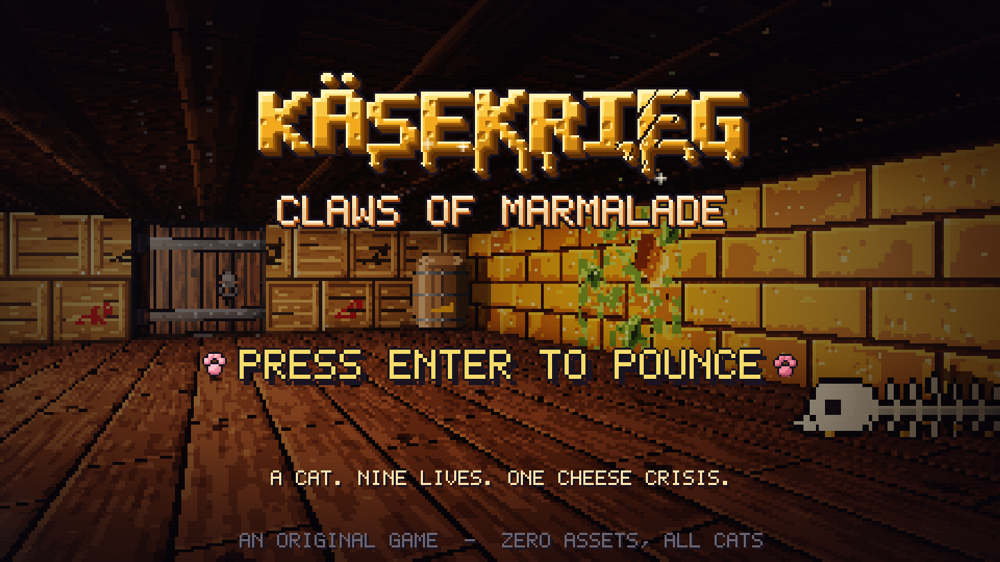
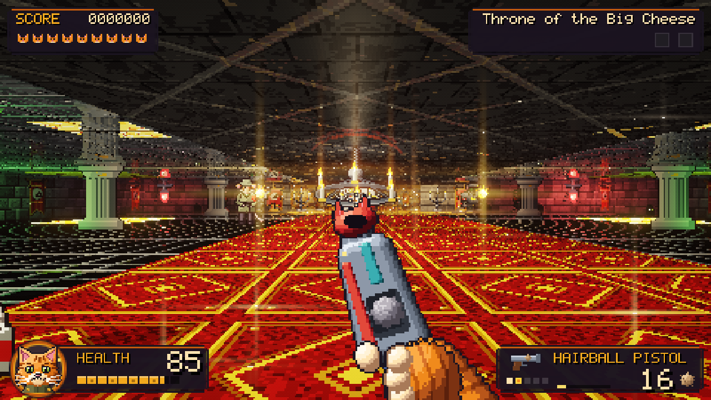
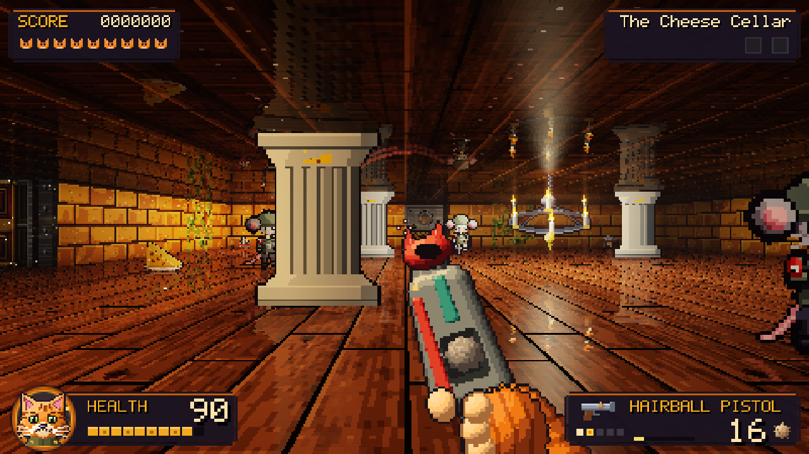
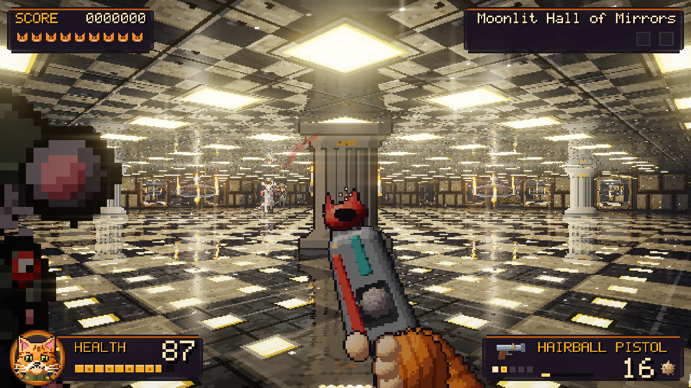
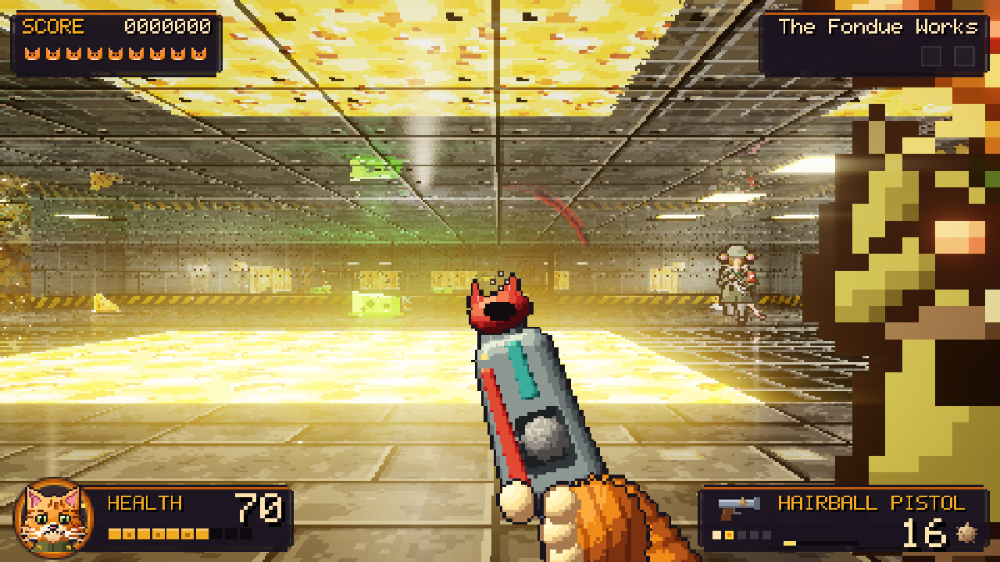
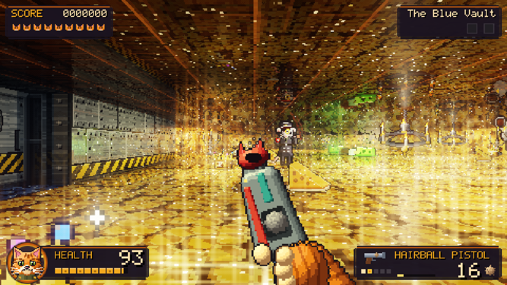
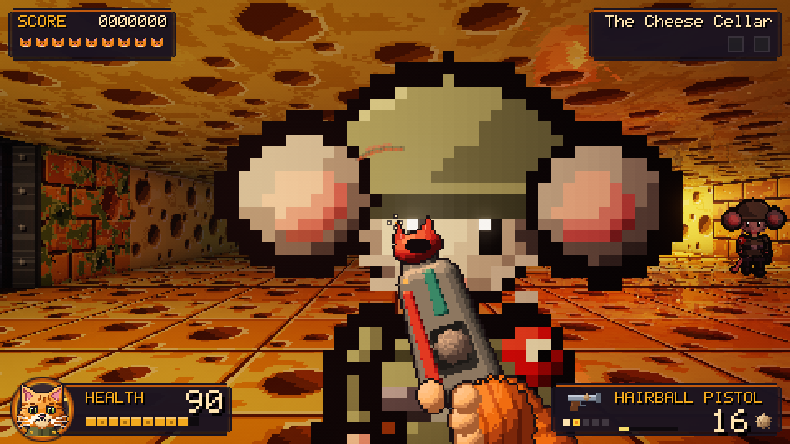
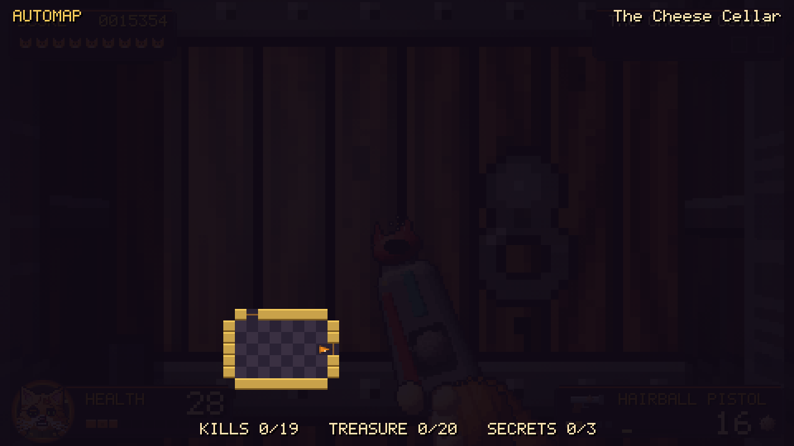
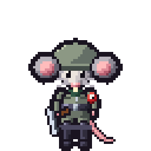
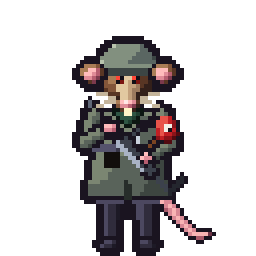
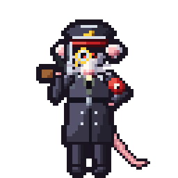
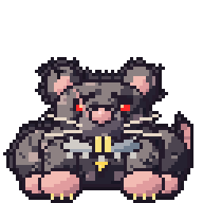
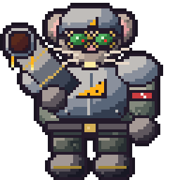
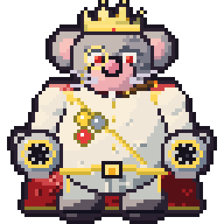
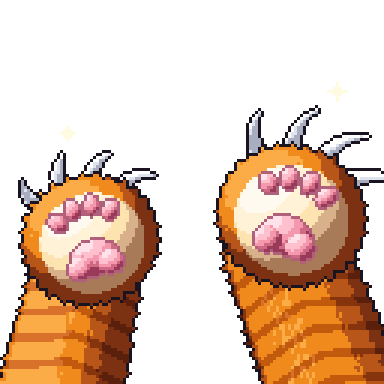
Claws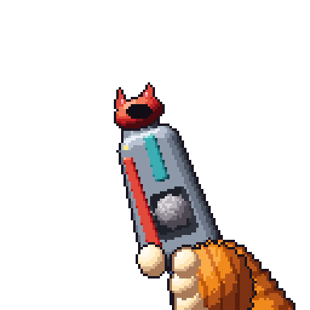
Hairball Pistol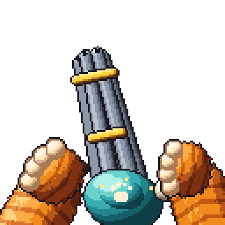
Purr-forator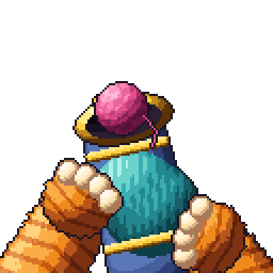
Yarn Bomber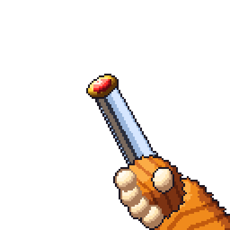
Der Rote Punkt| ACTION | KEYS |
|---|---|
| Move | WS or ↑↓ |
| Strafe | AD |
| Turn | Mouse (click to lock pointer), ←→ |
| Fire | Left mouse button, Ctrl |
| Run | Shift |
| Use (doors, switches, pushwalls) | Space or E |
| Select weapon | 1-5, Q cycles, mouse wheel |
| Meow (distraction noise) | M |
| Automap | Tab |
| Pause / back | Esc or P |
Gamepads are supported. Mouse sensitivity and volumes are in the Options menu.
All download assets are attached to the latest release. Builds are unsigned: on macOS right-click and choose Open, on Windows choose "More info" then "Run anyway". The browser version needs a browser with WebGL2.